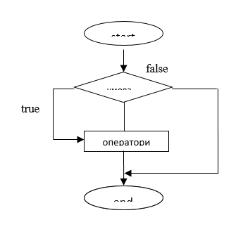

Теоретичні відомості
Contents
Теоретичні відомості¶
Лінійний алгоритм — алгоритм, в якому обчислення виконуються строго послідовно. Такий алгоритм реалізується простими інструкціями. Прості інструкції (simple statements) є базовим елементом більшості мов програмування і Python не виняток.
Прості інструкції розташовуються в одному рядку. Кілька простих інструкцій теж можна розташовувати в одному рядку, для цього вони повинні бути розділені крапкою з комою. Однак, зловживати не варто, так як це погано позначається на читання коду.
Типова блок-схема лінійного алгоритму показана на рис. 1.1.
Цілі числа (int)¶
Числа в Python 3 нічим не відрізняються від звичайних чисел. Вони підтримують набір звичайних математичних операцій:
Запис |
Операція |
|---|---|
|
додавання |
|
віднімання |
|
множення |
|
ділення |
|
отримання цілої частини від ділення |
|
залишок від ділення |
|
зміна знака числа |
|
модуль числа |
|
Частка і залишок від ділення |
|
зведення в ступінь |
|
x^y по модулю (якщо модуль заданий) |
Також потрібно відзначити, що цілі числа в Python 3, на відміну від багатьох інших мов, підтримують довгу арифметику (проте, це вимагає більше пам’яті).
Приклади операцій:
255 + 34
289
5 * 2
10
20/3
6.666666666666667
20//3
6
20%3
2
3**4
81
pow(3,4)
81
pow(3,4,27)
0
3**150
369988485035126972924700782451696644186473100389722973815184405301748249
Бітові операції¶
Над цілими числами також можна виконувати бітові операції.
Запис |
Операція |
|---|---|
|
побітове АБО |
|
побітове виключення АБО |
|
побітове І |
|
бітовий зсув вліво |
|
бітовий зсув вправо |
|
інверсія бітів |
Системи числення¶
Для переведення числа з однієї системи числення в іншу Python надає кілька функцій:
int ([object], [основа системи числення])— перетворення до цілого числа в десятковій системі числення. За замовчуванням система числення десяткова, але можна задати будь-яку основу від 2 до 36 включно.bin (x)— перетворення цілого числа в двійковий рядок.hex (х)— перетворення цілого числа в шістнадцятковий рядок.oct (х)— перетворення цілого числа в вісімковий рядок.
Дійсні числа (float)¶
Дійсні числа підтримують ті ж операції, що і цілі. Більш докладно про можливі операції див. Додаток 4.
Прості приклади роботи з числами:
c = 150
d = 12.9
c + d
162.9
p = abs(d - c) # Модуль числа
print(p)
137.1
round(p) # Заокруглення
137
Крім стандартних виразів для роботи з числами (а в Python їх не так вже й багато), в складі Python є кілька корисних модулів.
Модуль math надає більш складні математичні функції.
import math
math.pi
3.141592653589793
math.sqrt(85)
9.219544457292887
Модуль random реалізує генератор випадкових чисел і функції випадкового вибору.
import random
random.random()
0.01686419308383258
Більш докладно операції з різними типами змінних описано в Додатку 4.
Функції print і input¶
Для обміну даними із зовнішнім для програми середовищем в Python застосовуються функції print і input.
Функція print виводить на монітор те, що вказано в дужках при виклику цієї функції. У дужках можуть бути будь-які типи даних. Крім того, кількість даних може бути різним:
print(1032)
1032
print(2.34)
2.34
print("Hello")
Hello
print("a:", 1)
a: 1
one = 1
two = 2
three = 3
print(one, two, three)
1 2 3
Аргументи функції (те, що в дужках), поділяються між собою комами. У виводі замість ком значення розділені пробілом. Якщо в дужках стоїть вираз, то спочатку він виконується, після чого print() вже виводить результат цього виразу:
print("hello" + " " + "world")
hello world
print(10 - 2.5/2)
8.75
У print передбачені додаткові параметри. Наприклад, через параметр sep можна вказати відмінний від пробілу роздільник рядків:
print("Mon", "Tue", "Wed", "Thu", "Fri", "Sat", "Sun", sep="-")
Mon-Tue-Wed-Thu-Fri-Sat-Sun
print(1, 2, 3, sep="//")
1//2//3
Форматування виведення може виконуватися в так званому старому стилі або за допомогою строкового методу format. Старий стиль також називають С-стилем, так як він схожий з тим, як відбувається вивід на екран в мові C. Приклад:
pupil = "Ben"
old = 16
grade = 9.2
print("It's %s, %d. Level: %f" % (pupil, old, grade))
It's Ben, 16. Level: 9.200000
Тут замість трьох комбінацій символів %s, %d, %f підставляються значення змінних pupil, old, grade. Букви s, d, f позначають типи даних - рядок, ціле число, дійсне число. Якби було потрібно підставити три рядки, то у всіх випадках використовувалося б сполучення %s.
Хоча в якості значення змінної grade було зазначено число 9.2, на екран воно вивелося з додатковими нулями. Однак, можна вказати, скільки потрібно знаків після коми, записавши перед буквою f точку з бажаним числом знаків в дробовій частині:
print("It's %s, %d. Level: %.1f" % (pupil, old, grade))
It's Ben, 16. Level: 9.2
Тепер розглянемо метод format:
print("This is a {0}. It's {1}.".format("ball", "red"))
This is a ball. It's red.
print("This is a {0}. It's {1}.".format("cat", "white"))
This is a cat. It's white.
print("This is a {0}. It's {1} {2}.".format(1, "a", "number"))
This is a 1. It's a number.
У рядку в фігурних дужках вказані номери даних, які будуть сюди під-ставлені. Далі до рядка застосовується метод format. У його дужках вказуються самі дані (можна використовувати змінні). На нульове місце підставиться перший аргумент методу format, на місце з номером 1 - другий і т. д.
За введення у програму даних з клавіатури в Python відповідає функція input. Коли викликається ця функція, програма зупиняє своє виконання і чекає, коли користувач введе текст. Після цього, коли він натисне Enter, функція input забере введений текст і передасть його програмі, яка вже буде обробляти його відповідно до своїх алгоритмів.
Якщо у інтерактивному режимі ввести команду input, то комп’ютер буде чекати, коли ви введете щось і натиснете Enter або просто натиснете Enter. Якщо ви щось ввели, це відразу ж відобразитися на екрані:
input()
'Yes!'
Функція input передає введені дані у програму. Їх можна присвоїти змінній. В цьому випадку інтерпретатор не виводить рядок відразу ж:
answer = input()
No, it is not.
В даному випадку рядок зберігається в змінній answer, і при бажанні можно вивести її значення на екран:
answer
'No, it is not.'
При використанні функції print лапки опускаються.
За замовчуванням функція іnput вводить інформацію як рядок, тобто як символи.
Приклад:
x = input()
y = input()
print (x+y) # до першого рядку приєднується другий
512
Щоб працювати з числовою інформацією треба для функції input вказати тип числа, що вводиться (наприклад, int або float).
Приклад:
x = int(input())
y = int(input())
print(x+y) # перше число складається з другим
12
5
17
Перед викликом функції треба передбачити спеціальне запрошення, тому що користувач може не зрозуміти, що від нього чекає програма.
Приклад:
UserName = input()
print(UserName)
Natalia
Natalia
Поняття розгалуження¶
Розгалужений обчислювальний процес передбачає кілька можливих напрямків обчислення, але тільки одиніз них повинен виконуватися при реалізації алгоритму. Тому розгалуження включає перевірку одного або декількох умов, в залежності від якої і буде вибиратися напрямок (гілка) обчислення.
Таким чином, алгоритм розгалуження складається з перевірки умови (умов) і всіх можливих гілок обчислення, при цьому бажано, щоб дії, загальні для всіх гілок, описувалися один раз (до або після розгалуження).
Найбільш відома інструкція, що дозволяє реалізувати логічне розгалуження, складається з трьох частин: if, elif, else.
Керуючі конструкції. Оператори if ... elif ... else¶
Структура керуючої конструкції (або “прийняття рішення”) вимагає, щоб програміст поставив одне або більше умов, які будуть виконані і перевірені програмою і однієї або декількох дій, які будуть виконані, якщо умова буде визначено як істина (true) і, опціонально, інші вирази, які будуть виконані, якщо умова буде визначено як хибність (false).
Нижче наведено форму типової структури форми керуючої конструкції, яка схожа в більшості мов програмування (рис.1.2):

Рисунок 1.2. − Приклад розгалуженого алгоритму програми.
Мова програмування Python передбачає будь-яке не рівне нулю або не порожнє значення як істину (true), і навпаки - якщо значення буде порожнім або дорівнювати нулю — то воно буде вважатися хибним (false).
Оператор if¶
Оператор if в Python подібний цьому оператору в інших мовах. Утвердження з використанням оператора if містить в собі логічну умову, в який проводиться порівняння даних і по результату вибирається подальша дія.
Синтаксис¶
Синтаксис оператора if в Python такий:
if <умова>:
<дія(ї)>
Якщо логічна умова є істиною (true), тоді блок дій в виразі буде виконаний. Якщо умова є хибною (false) — тоді буде виконаний наступний блок коду після цього виразу.
Приклад:
var1 = 100
if var1:
print("1 - Got a true expression value")
print(var1)
var2 = 0
if var2:
print("2 - Got a true expression value")
print(var2)
print("Good bye!")
1 - Got a true expression value
100
Good bye!
Оператори if .. elif .. else¶
Оператор else може використовуватися разом з оператором if. Оператор else містить блок коду, який буде виконаний, якщо результат виразу дорівнює нулю або вважається хибним. Це опціональний оператор, і він може бути тільки один у всьому виразі після if.
Синтаксис¶
if <умова>:
<дія(ї)>
else:
<дія(ї)>
Приклад:
var1 = 100
if var1:
print("1 - Got a true expression value")
print(var1)
else:
print("1 - Got a false expression value")
print(var1)
var2 = 0
if var2:
print("2 - Got a true expression value")
print(var2)
else:
print("2 - Got a false expression value")
print(var2)
print("Good bye!")
1 - Got a true expression value
100
2 - Got a false expression value
0
Good bye!
Оператор elif¶
Оператор elif дозволяє виконувати множинну перевірку виразу і виконувати блок коду, як тільки результат буде вважатися істиною.
Як і оператор else, elif опціональний, однак, на відміну від else, він може використовуватися багаторазово.
Синтаксис¶
if <умова>:
<дія(ї)>
elif <умова2>:
<дія(ї)>
elif <умова3>:
<дія(ї)>
else:
<дія(ї)>
В Python немає таких операторів як switch або case, але можна використовувати оператори if..elif ... замість них.
Приклад:
var = 100
if var == 200:
print("1 - Got a true expression value")
print(var)
elif var == 150:
print("2 - Got a true expression value")
print(var)
elif var == 100:
print("3 - Got a true expression value")
print(var)
else:
print("4 - Got a false expression value")
print(var)
print("Good bye!")
3 - Got a true expression value
100
Good bye!
Вкладені конструкції if¶
Бувають випадки, коли ви хочете провести ще одну перевірку після того, як результат виразу прийнятий як істина. В такому випадку - можна використовувати вкладені керуючі конструкції if (або інакше каскадні).
У вкладеної конструкції, ви можете додавати if .. elif .. else всередині іншої такої ж конструкції.
Синтаксис¶
if <умова1>:
<дія(ї)>
if <умова2>:
<дія(ї)>
elif <умова3>:
<дія(ї)>
else:
<дія(ї)>
elif <умова4>:
<дія(ї)>
else:
<дія(ї)>
Приклад:
var = 100
if var < 200:
print("Expression value is less than 200")
if var == 150:
print("Which is 150")
elif var == 100:
print("Which is 100")
elif var == 50:
print("Which is 50")
elif var < 50:
print("Expression value is less than 50")
else:
print("Could not find true expression")
print("Good bye!")
Expression value is less than 200
Which is 100
Good bye!
Як правило, в якості умови, що перевіряється використовується результат обчислення одного з наступних операторів порівняння:
Оператор |
Значення |
|---|---|
|
Менше — умова вірна, якщо перший операнд менше другого. |
|
Більше — умова вірна, якщо перший операнд більше другого. |
|
Менше або дорівнює. |
|
Більше або дорівнює. |
|
Рівність — Умова вірна, якщо два операнда рівні. |
|
Нерівність — Умова вірна, якщо два операнда нерівні. |
Оператори порівняння в Python можна об’єднувати в ланцюжки (на відміну від більшості інших мов програмування, де для цього потрібно використовувати логічні зв’язки), наприклад, a == b == c або 1 <= x <= 10.
Оператори порівняння повертають значення спеціального логічного типу bool. Значення логічного типу можуть приймати одне з двох значень: True (істина) або False (хибність). Якщо перетворити логічне True до типу int, то вийде 1, а перетворення False дасть 0. При зворотному перетворенні число 0 перетворюється в False, а будь-яке ненульове число в True. При перетворенні str в bool порожній рядок перетворюється в False, а будь-який непорожній рядок в True.